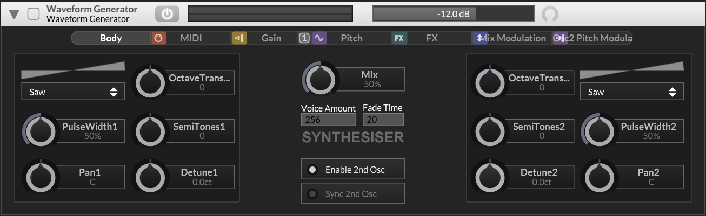

Waveform Generator

A dual-oscillator waveform generator based on Martin Finke's PolyBLEP algorithm for band-limited synthesis. Each oscillator supports 9 waveform types and can be independently tuned by octave, semitone, and cent offsets. The two oscillators are mixed with a linear crossfade and panned into stereo using an equal-power panning law.
When EnableSecondOscillator is off, oscillator 1's output is copied to both internal channels and the mix/pan stages are skipped entirely, saving CPU. When enabled, the second oscillator can be hard-synced to the first, or independently pitch-modulated at audio rate for FM-style synthesis via the Osc2PitchMod chain.
Waveform Types
Both oscillators support 9 waveform types, selectable via WaveForm1 and WaveForm2.
| # | Waveform | Description | |
|---|---|---|---|
| 1 | Sine | A sinusoidal curve | |
| 2 | Triangle | A triangular waveform | |
| 3 | Saw | A sawtooth waveform (odd harmonics only) | |
| 4 | Square | A square waveform. Pulse width adjustable via PulseWidth. |
|
| 5 | Noise | White noise | |
| 6 | Triangle 2 | A variation of the triangle waveform | |
| 7 | Square 2 | A variation of the square waveform | |
| 8 | Trapezoid 1 | A trapezoidal waveform variation | |
| 9 | Trapezoid 2 | A trapezoidal waveform variation |
Signal Path
Parameters
| Parameter | Description | Range | Default |
|---|---|---|---|
| General | |||
| Gain | Output volume (linear, not dB). Use a SimpleGain effect for decibel-scaled control. | 0.0 - 1.0 | 0.25 |
| Balance | Stereo balance | -1.0 - 1.0 | 0.0 |
| VoiceLimit | Maximum number of simultaneous voices | 1 - 256 | 256 |
| KillFadeTime | Fade-out time when voices are killed | 0 - 20000 ms | 20 ms |
| Oscillator 1 | |||
| WaveForm1 | Waveform type | Sine, Triangle, Saw, Square, Noise, Triangle 2, Square 2, Trapezoid 1, Trapezoid 2 | Saw |
| OctaveTranspose1 | Octave transpose | -5 - 5 | 0 |
| SemiTones1 | Semitone transpose | -12 - 12 | 0 |
| Detune1 | Fine detune in cents | -100 - 100 | 0 |
| PulseWidth1 | Pulse width (for square-type waveforms) | 0.0 - 1.0 | 0.5 |
| Pan1 | Stereo panning | -1.0 - 1.0 | 0.0 |
| Oscillator 2 | |||
| EnableSecondOscillator | Enable osc2. When off, osc1 output is copied to both channels. | On / Off | On |
| WaveForm2 | Waveform type | Sine, Triangle, Saw, Square, Noise, Triangle 2, Square 2, Trapezoid 1, Trapezoid 2 | Saw |
| OctaveTranspose2 | Octave transpose | -5 - 5 | 0 |
| SemiTones2 | Semitone transpose | -12 - 12 | 0 |
| Detune2 | Fine detune in cents | -100 - 100 | 0 |
| PulseWidth2 | Pulse width (for square-type waveforms) | 0.0 - 1.0 | 0.5 |
| Pan2 | Stereo panning | -1.0 - 1.0 | 0.0 |
| Mix | |||
| Mix | Linear crossfade between oscillators | 0.0 - 1.0 | 0.5 |
| HardSync | Resets osc2 phase when osc1 completes a cycle | On / Off | Off |
Modulation Chains
WaveSynth inherits standard Gain and Pitch modulation chains from its parent class. Additionally, it provides an independent pitch chain for oscillator 2 and a mix modulation chain.
| Chain | Description | Scope | Mode |
|---|---|---|---|
| GainMod | Modulates the output volume of both oscillators before mixing | per-voice | Gain |
| PitchMod | Modulates pitch of both oscillators simultaneously | per-voice | Pitch |
| Osc2PitchMod | Independent pitch chain for osc2. Supports audio-rate modulation for FM-style synthesis. | per-voice | Pitch |
| MixMod | Modulates the oscillator crossfade. Audio rate, clamped 0-1. | per-voice | ScaleAdd |
Notes
The PolyBLEP algorithm automatically falls back to a pure sine wave when the oscillator frequency reaches sampleRate / 4 to prevent aliasing artifacts. This is transparent to the user but means very high-pitched notes will always produce a sine regardless of the selected waveform.
The pitch calculation combines three layers: octave transpose (pow(2, octaves)), semitone transpose (pow(2, semitones/12)), and fine detune in cents (pow(2, cents/1200)). These are multiplied together with the base frequency from the MIDI note.
During voice rendering, osc1 writes to voiceBuffer[0] and osc2 writes to voiceBuffer[1]. These are not stereo channels but separate oscillator outputs that get mixed and panned into stereo afterward. The final stereo output is summed across all active voices by the parent ModulatorSynth.